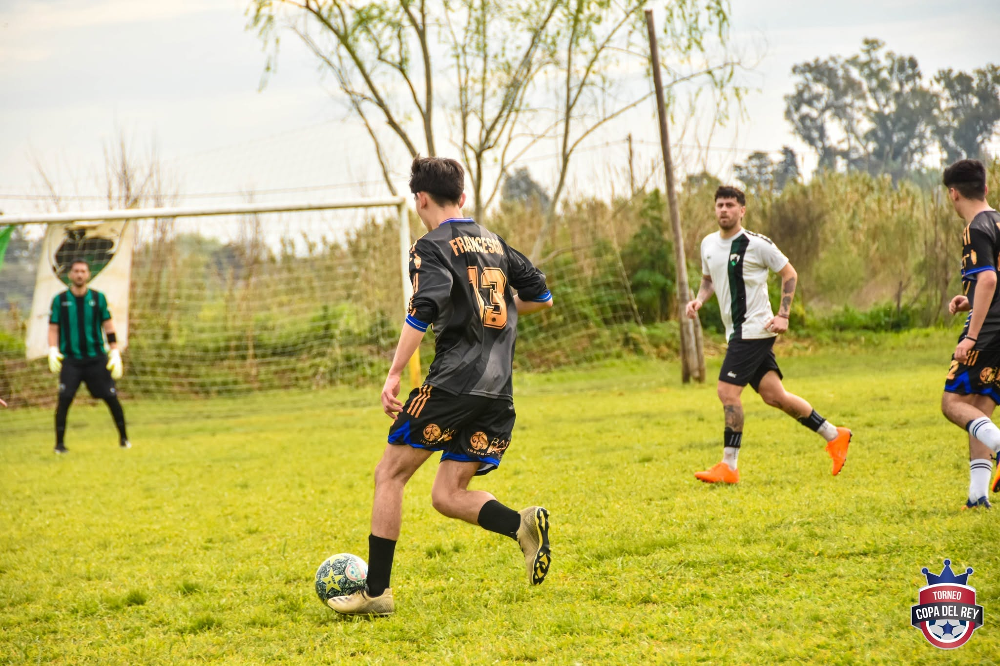
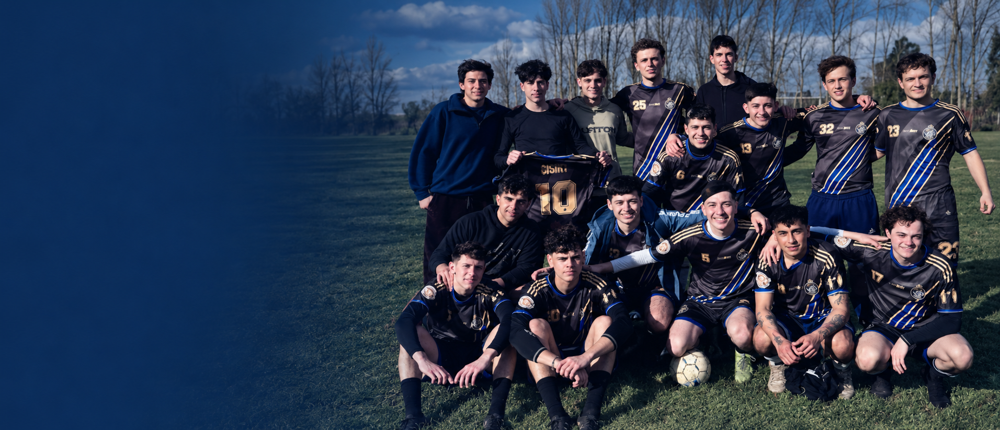
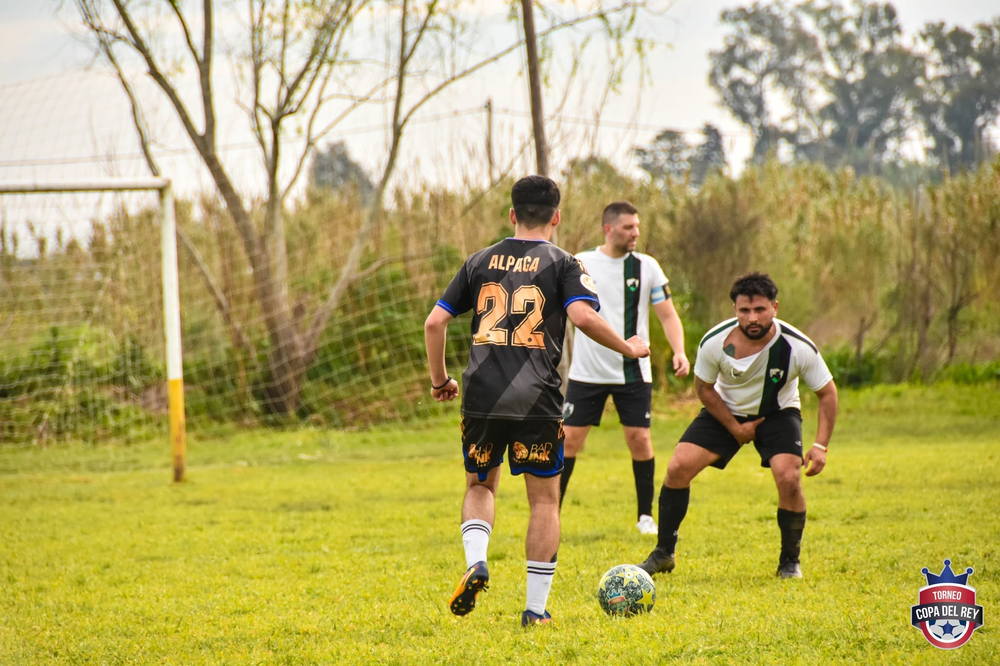

TORNEO · FECHA 6
Sporting gana los 3 puntos de la Fecha 6
Tras darse a conocer que un jugador expulsado de LPF jugó el partido por la Fecha 6, Copa Del Rey le ha quitado los puntos a LPF y se los ha dado a Sporting.
21/09
Actualizado hasta el:
27/09/26
 |
|
 |
|
Tras darse a conocer que un jugador expulsado de LPF jugó el partido por la Fecha 6, Copa Del Rey le ha quitado los puntos a LPF y se los ha dado a Sporting.
21/09
Tras un bochornoso y malintencionado arbitraje de "El Topo", Sporting se queda sin puntos en la sexta fecha.
19/09

📸 Fotografías hechas por Fernanda Paz | @fpazph